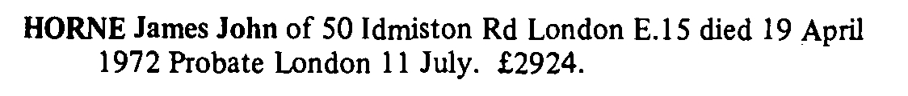

James John Horne 1882 - 1972
[ Home ] | [ Calendar ] | [ Surnames Index ] | [ Census Index ] | [ Family History ]A plate glass cutter and the child of James Horn (an engine fitter) and Ellen Oliver (a silk weaver), James Horne, the second cousin twice-removed on the father's side of Nigel Horne, was born in Bethnal Green, London, England on Dec 2, 18821,2,3,4, was baptized there at St Matthias on Dec 24, 1882 and married his first cousin once-removed on his father's side Florence Horne (a domestic general help with whom he had 1 child, James George) at St James' Church, Forest Gate, London, England on Mar 24, 19136.
During his life, he was living at 155 Gosset Street in Bethnal Green on Apr 5, 18911; at 32 Belgrave Street, Stepney, London on Mar 31, 19018; at 70 Warner Place in Bethnal Green on Apr 2, 19117; and at 50 Idmiston Road, West Ham, London on Jun 19, 19219, on Sep 29, 19392 and in 1972. In 1921 he was working at T & W Ide Glass Merchants on Brook Street, Ratcliffe, London, England.
He died on Apr 19, 1972 in Newham, London, England4,5.
Parents
- James John
- Ellen was born in 1857
Children
- James George was born on Dec 26, 1914
Citations
- 1891 England, Wales & Scotland Census - Findmypast (was age 8 and the son of the head of the household)
- 1939 Register - Findmypast (was the head of the household)
- England & Wales births 1837-2006 - Findmypast
- England & Wales deaths 1837-2007 - Findmypast
- England & Wales Government Probate Death Index 1960-2019 - Findmypast
- England & Wales Marriages 1837-2005 - Findmypast
- 1911 Census for England & Wales - Findmypast (was age 28 and the son of the head of the household)
- 1901 England, Wales & Scotland Census - Findmypast (was age 18 and the son of the head of the household)
- 1921 Census Of England & Wales - Findmypast (was age 38 and the head of the household)
Media
James John Horne - Probate

1911 Census For England & Wales - GBC-1911-RG14-01385-0229-3
1939 Register Transcription - TNA-R39-1026-1026B-003-21
1939 Register Transcription - TNA-R39-1026-1026B-003-23
England & Wales Deaths 1837-2007 - BMD-D-1972-2-AZ-000556-103
1901 England, Wales & Scotland Census - GBC/1901/0007341745
England & Wales births 1837-2006 - BMD/B/1883/1/AZ/000293/112
England & Wales Government Probate Death Index 1960-2019 - GBOR/GOVPROBATE/A/1972-1974/00452413
England & Wales marriages 1837-2005 - BMD/M/1913/1/AZ/000442/133
1921 Census of England & Wales - GBC/1921/RG15/08309/0537/01
Family Tree

Generated by ged2site. Last updated on Jun 11, 2024